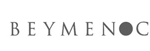
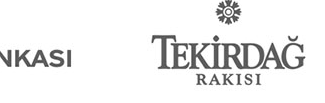
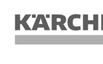
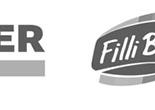
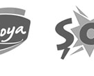
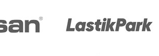
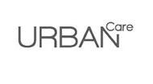
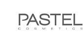
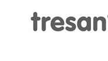
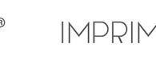
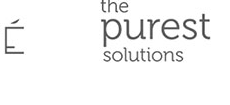
Farkımız
Adon Studio, kendini dönüştürmüş bir stüdyodur. Birçok çözümün aksine, biz zanaat mirasımızı Yapay Zekâ Orkestrasyon Sistemi ile birleştiriyoruz. Bu entegrasyon sayesinde, yaratıcı işleri sadece hızlı değil, aynı zamanda derin estetik değer ve stratejik titizlikle sunuyoruz.
Dönüşümün Beş Temel Taşı











Çözümlerimiz
Yeteneklerimizi kullandığımız araçlara göre değil, stratejik hedeflerinize ve gereken ustalık seviyesine göre düzenliyoruz.
Ölçülebilir İş Etkisi
Başarımızı teslim edilen dosya sayısıyla değil, müşterilerimizin kârlılığına sağladığımız elle tutulur katkıyla ölçüyoruz.
Konuşmayı Başlat →